Idleon에는 모든 클래스가 스타 탤런트 포인트로 레벨을 올릴 수 있는 수십 가지 고유한 Special Talents이 있습니다. 일반 클래스 탤런트와 달리 이 탤런트들은 보스, 상점, 퀘스트, 특정 게임 활동을 통해 얻을 수 있어 추적하기 어려울 수 있습니다.
이 가이드에서는 모든 탤런트를 어떻게 획득하는지와 제한된 포인트로 어떤 순서로 레벨을 올리는지에 대한 권장 사항을 설명합니다. 또한 스타 탤런트 포인트를 추가로 획득하는 방법과 초기화 방법도 다룹니다.
모든 스타 탤런트 출처 및 우선순위
아래는 모든 스타 탤런트, 잠금 해제 방법, 권장 우선순위 등급(S>A>B>C)입니다. 현재 보유한 탤런트에 사용 가능한 모든 포인트를 투자하여 각 등급을 순서대로 최대화하고, S 또는 A 등급 옵션을 더 잠금 해제할 때 필요에 따라 초기화하는 것을 권장합니다. 일부 스타 탤런트는 전투나 스킬링 중 하나에만 효과가 있으므로, 전투 및 스킬링 전용 클래스 탤런트 프리셋에 맞게 포인트를 분배하세요.
아래 목록은 권장 순서, 탤런트별로 다른 최대 레벨 효과, 그리고 중요한 추가 정보를 포함합니다.
| Special Talent (전투/스킬링) | 출처 | 최대 레벨 효과 / 비고 | 등급 |
|---|---|---|---|
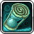 Tick Tock (전투/스킬링 모두) |
World 2 연금술 액체 상점에서 물방울 50개로 구매 | 전투 및 스킬링 AFK 획득량 +6.43% 증가 | S |
 Crystals 4 Dayys (전투) Crystals 4 Dayys (전투) |
World 1 Froggy Fields의 Picnic Stowaway 일일 퀘스트라인 (The Last Supper, at Least for Today!) 완료 | 크리스탈 몬스터 스폰 확률 +116% 증가 | S |
| Stonks! (전투/스킬링 모두) | World 2 Sands of Time의 Wellington 최종 퀘스트 (Puzzles and Math, a Winning Combination!) 완료 | 스타 탤런트 포인트 +49 (레벨 30). 추가 포인트는 투자 대비 수익이 낮아지므로 레벨 30까지만 올리는 것을 권장. | S |
 Supersource (스킬링) Supersource (스킬링) |
Flurbo Shop (파티 던전)에서 구매 | 모든 스킬의 기본 효율 +126 증가 | S |
| Action Frenzy (스킬링) | Flurbo Shop (파티 던전)에서 구매 | 스킬링 속도 +30% 증가 | S |
| Ancient Multitool (스킬링) | VIP Talent Library | 모든 스킬 효율 39.919% | S |
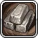 Statue Metallurgy (전투) |
VIP Talent Library | 몬스터가 평소의 2배 동상을 드랍할 확률 +11.976% | S |
| Studious Quester (스킬링) | World 4 Wurm Highway의 Royal Worm 퀘스트 (Let the Tails Hit the Floor) 완료 | 모든 캐릭터에서 완료한 퀘스트당 스킬 효율 +0.1% (레벨당 상한 +0.4% 증가). 완료한 퀘스트 수에 따라 레벨을 올리세요. | S |
 Frothy Malk (전투/스킬링 모두) Frothy Malk (전투/스킬링 모두) |
World 1 메리트 상점의 특수 탤런트 드랍이 있을 경우 World 1의 Dr Defecaus와 Baba Yaga에서 획득 | 음식 및 포션 효과 +33.33% 증가 | S |
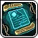 Printer Sampling (전투/스킬링 모두) |
World 3 마을의 Hoggindaz 퀘스트 (Constructing a Tower) 완료 | 샘플 크기 +17.5%. 활성화하면 AFK 획득물의 샘플을 생성하여 3D 프린터에서 사용 가능 (탤런트 포인트 1개만 투자해도 최우선 기능 사용 가능) | S |
 Rando Event Looty (전투/스킬링 모두) Rando Event Looty (전투/스킬링 모두) |
World 2 Island Expeditions – Rando Island Shop | 발견한 랜덤 이벤트 아이템당 AFK 획득량 +0.5% | A |
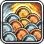 Cash Money (전투) |
World 1 몬스터 드랍 | 몬스터 코인 드랍 +46.67% 증가 | A |
| Beginner Best Class (전투) | Journeyman 캐릭터 생성 | 무기 공격력 +50, Journeyman 레벨 10마다 +1 추가 | A |
 Goblet Of Hemoglobin (전투) Goblet Of Hemoglobin (전투) |
World 1 (Blunder Hills) 메리트 상점에서 구매 | 몬스터 킬당 HP 재생 +2.59% (Active(직접 플레이) 및 AFK 모두 적용) | A |
| Cardiovascular (전투/스킬링 모두) | World 2 메리트 상점의 특수 탤런트 드랍이 있을 경우 World 2의 Biggie Hours와 King Doot에서 획득 | 카드 드랍률 +37.5% 증가 | A |
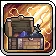 Telekinetic Storage (전투/스킬링 모두) |
World 3 (Frostbite Tundra) 메리트 상점에서 구매 | 모든 아이템 최대 보유량 +13.64% 증가. 활성화하면 인벤토리 아이템을 창고로 직접 입금하고 바닥 아이템 제거 (탤런트 포인트 1개만 투자해도 최우선 기능 사용 가능) | A |
 Attacks on Simmer (전투/스킬링 모두) Attacks on Simmer (전투/스킬링 모두) |
World 1 몬스터 드랍 | 공격 동작이 AFK 획득량에 미치는 영향 +13.33% (공격 바 기준) | A |
| Overaccurate Crit (전투) | VIP Talent Library | 명중률이 100% 초과할 때 Accuracy(명중률) 10 단위당 치명타 확률 +6.22% | A |
| Mega Crit (전투) | Flurbo Shop (파티 던전)에서 구매 | 치명타 확률 +10%, 메가 크리티컬 데미지량 +402% | A |
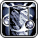 Monolithialism (전투) |
World 4 Flamboyant Bayou의 Monolith 퀘스트 (A lack of Modesty) 완료 | Onyx 동상당 멀티킬 +18% | A |
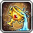 Boss Battle Spillover (전투/스킬링 모두) |
World 2 주간 전투 상점에서 트로피 25개로 구매 | 격파한 보스 난이도 레벨당 드랍률 +12.5% | A |
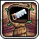 Shrine Architect (전투/스킬링 모두) |
W3의 Hoggindaz 퀘스트 (Taking Samples) 완료 | 성소 충전 속도 +33.33%. 활성화하면 맵에 성소 배치 가능 (탤런트 포인트 1개만 투자해도 최우선 기능 사용 가능) | A |
 Dummy Thicc Stats (전투/스킬링 모두) Dummy Thicc Stats (전투/스킬링 모두) |
World 2 Island Expeditions – Shimmer Island Shop | Shimmer Island의 연습 더미에 가한 데미지량 10 단위당 모든 스탯 +0.28% | B |
| Quest Kapow! (전투) | Upgrade Vault에서 구매 | 모든 캐릭터 완료 퀘스트당 데미지량 +1% (레벨당 상한 +5% 증가). 완료 퀘스트 수에 따라 레벨 투자. | B |
 Toilet Paper Postage (스킬링) Toilet Paper Postage (스킬링) |
World 1 Rats Nest의 TP Pete 옆에서 채팅에 "More like Poopy Pete" 입력 | 스킬 효율 스탬프 효과 1.53배 증가 | B |
| Dungeonic Damage (전투) | Flurbo Shop (파티 던전)에서 구매 | 획득한 크레딧 10 단위당 데미지량 +7.54% | B |
| Tiptoe Quickness (전투) | VIP Talent Library | 이동 속도 200% 미만이면 이동 속도 +17.75%, 200% 이상이면 명중률 +21.3% | B |
| Coins for Charon (전투) | VIP Talent Library | 멀티킬 데미지 티어에 따른 코인 드랍 +19.14% | B |
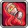 Spice Spillage (전투/스킬링 모두) |
World 4 (Hyperion Nebula) 메리트 상점에서 구매 | 1시간 이상 AFK 획득 청구 시 모든 펫 스파이스 100% 확률로 획득 | B |
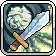 Filthy Damage (전투) |
World 2 Island Expeditions – Trash Island Shop | 수집한 쓰레기 10 단위당 데미지량 +13.33% | B |
| Dreamer Damage (전투) | World 3 Equinox Valley의 Dream Cloud #5 완료. Bloodbones에서 Equinox Mirror 사용으로 접근. | 완료한 Equinox Dream 구름 수당 데미지량 +3.33% | B |
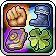 Stat Overload (전투/스킬링 모두) |
World 5 (Smolderin Plateau) 메리트 상점에서 구매 | STR, AGI, WIS, LUK 합계 +300 | B |
 Ubercharged Health (전투/스킬링 모두) Ubercharged Health (전투/스킬링 모두) |
VIP Talent Library | 기본 HP +6,517 | B |
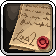 Will Of The Eldest (전투/스킬링 모두) |
World 1 마을의 Scripticus 퀘스트 (The Bigger they are, the Bigger they Fall!에서 Amarok 처치) 완료 | 계정 최고 캐릭터 레벨 10마다 모든 스탯 +1 (레벨당 상한 +1% 증가) | C |
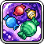 Milkyway Candy (전투/스킬링 모두) |
Flurbo Shop (파티 던전)에서 구매 | 30시간 이상 AFK 시 시간 캔디 획득 확률 +100% | C |
| Quest Chungus (전투) | 크리스탈 몬스터 드랍 (모든 월드) | 완료 퀘스트당 LUK +1 (레벨당 상한 +4 증가). 완료 퀘스트 수에 따라 레벨 투자. | C |
| American Tipper (전투) | VIP Talent Library | 요리 레벨 10당 코인 +56.81% | C |
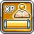 Just EXP (전투) |
World 1 메리트 상점의 특수 탤런트 드랍이 있을 경우 World 1의 Dr Defecaus와 Baba Yaga에서 획득 | 획득 클래스 경험치 +6.67% 증가 | C |
 Bored To Death (전투) Bored To Death (전투) |
World 2 주간 전투 상점에서 트로피 25개로 구매 | 리스폰 시간 400초 감소 (AFK 생존률 증가) | C |
| Roll Da Dice (전투) | World 1 몬스터 드랍 | 7,500면 주사위를 굴려 1이 나오면 Dice Dynamo 트로피 획득 (무기력 1, LUK 5, LUK 2%) | C |
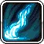 Pulsation (전투) |
World 2 메리트 상점의 특수 탤런트 드랍이 있을 경우 World 2의 Biggie Hours와 King Doot에서 획득 | 마나 재생률 +46.88% | C |
| EXP Converter (스킬링) | World 1 Tunnels Entrance의 Glumlee 퀘스트 (The Impossible Task) 완료 | EXP 변환 +25%. 획득한 스킬 경험치(예: 채광)를 클래스 경험치로 변환 | C |
| Convert Better, Darnit (스킬링) | World 2 (Yum-Yum Desert) 메리트 상점에서 구매 | 스킬 레벨 5마다 클래스 EXP 1.57배 증가 (EXP Converter 탤런트 강화) | C |
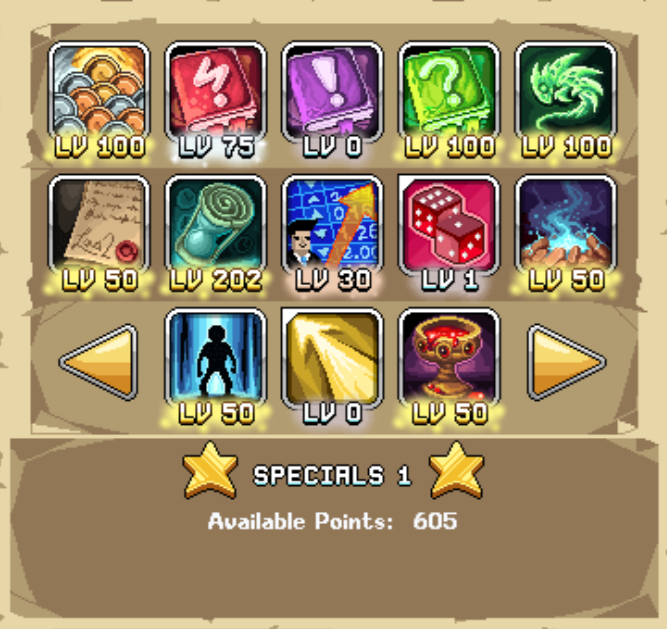
스타 탤런트 포인트 추가 획득 방법
스타(특수) 탤런트 포인트를 추가로 얻는 방법은 다양합니다. 아래 목록은 접근 가능한 대략적인 순서로 정렬되어 있습니다.
| 출처 | 스타 탤런트 포인트 | 비고 |
|---|---|---|
| 캐릭터 레벨 | 레벨당 +1 | |
| Star Player 탤런트 | 탤런트 포인트당 +1 | 모든 클래스의 탭 1 탤런트 |
| Stonks! 스타 탤런트 | 탤런트 포인트당 +1 | 레벨 30까지만 투자하는 것이 최적 효율. 추가 포인트는 비용이 제공량을 초과함 |
| Upgrade Vault | 구매당 +1 | 최대 150포인트 |
| 길드 보너스 – Star Dazzle | 레벨당 +1.2 | 최대 60포인트. 공식 Idleon 디스코드에서 활성 길드 가입 필요 |
| Talent S Stamp | 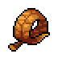 스탬프 레벨당 +1 |  World 2 Faraway Piers의 Fishpaste97에서 구매. Twisty Leaf (야자수)로 업그레이드 World 2 Faraway Piers의 Fishpaste97에서 구매. Twisty Leaf (야자수)로 업그레이드 |
| World 2 Island Expeditions – Trash Island Bribe | +33 | |
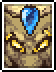 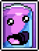 Nightmare/Gilded Efaunt (World 2) & Soda Can (World 4) 카드 | +15~90 / +5~30 (카드 레벨에 따라) | 카드를 장착하지 않아도 패시브 적용 |
| World 2 Island Expeditions – Fractal Island | +100 | 이 섬에서 AFK 20,000시간 후 잠금 해제 |
| 시길 – Two Starz | +10~45 | 시길 레벨에 따라 증가 |
| +1 | Wizard 캐릭터 레벨에 따라 증가 (레벨 300에서 약 +46, 레벨 500에서 약 +79) | |
| 샤이니 펫 – Cryosnake | 샤이니 레벨당 +2 | World 4 브리딩 스킬로 접근 |
| Bottle Capital (World 4 업적) | +10 | 창고에 정확히 80만 개의 병뚜껑을 보유하면 업적 달성 |
| Artifact Jones (World 5 업적) | +20 | 항해에서 고대 유물 30개 모두 수집 |
| Utter Disrespect (World 5 업적) | +20 | 선장을 구매한 후 즉시 삭제 |
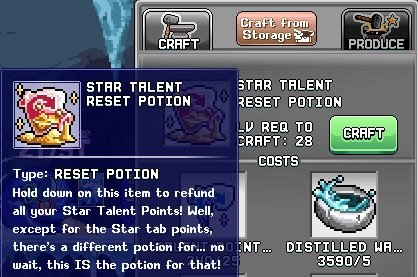
스타 탤런트 포인트 초기화 방법
특정 캐릭터의 스타 탤런트 포인트를 초기화하려면 탭 2 모루에서 제작한 Star Talent Reset Potion을 사용하면 됩니다. 이 아이템은 Gem Shop에서 젬 300개로 직접 구매할 수도 있지만, 무료로 제작할 수 있으므로 구매할 가치는 없습니다.

제작법을 먼저 잠금 해제해야 합니다. World 2의 아래 몬스터를 처치하면 됩니다.
| 몬스터 (드랍 확률) | 위치 | 비고 |
|---|---|---|
| Efaunt (1/25 확률) | World 2 Djonnuttown 맵에서 접근하는 World 2 보스 | 어떤 난이도에서도 모루 레시피 드랍 가능 |
| Biggie Hours (1/17 확률) | World 2 콜로세움 또는 Mimic Zone 맵에서 소환 | World 2 Sandstone 콜로세움에서 처치하거나, World 2 Mimic Zone의 깨진 모래시계에 Googley Eyes를 드롭하여 소환 가능 |
레시피 잠금 해제 후 다음 재료가 필요합니다.
| 재료 | 필요 수량 | 출처 |
|---|---|---|
| Talent Point Reset Fragment | 25개 | 대부분의 몬스터 드랍 또는 World 1, 2, 3 상인에서 매일 구매 가능 |
| Distilled Water | 5개 | 연금술 액체 상점 또는 World 3 몬스터 드랍 |